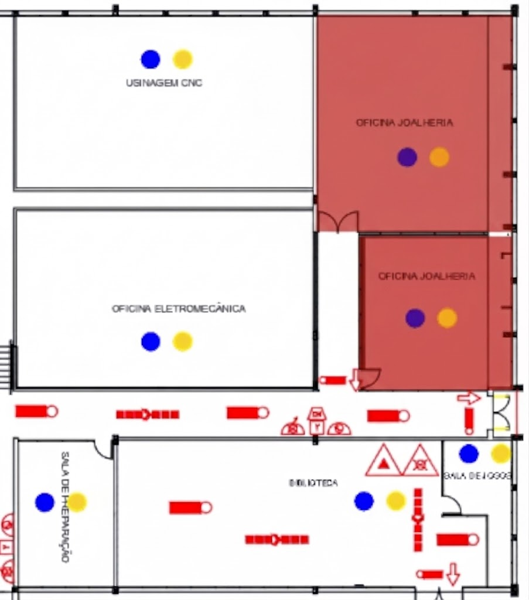

SETOR DE JOALHERIA
O setor de joalheria realiza a modelagem, fundição, cravação e polimento de metais preciosos. Devido à presença de micropartículas suspensas e uso de pequenos maçaricos, é imprescindível o uso de óculos de proteção ampla visão, máscara contra poeiras finas e avental de proteção.

Riscos no Setor
- Inalação de poeiras metálicas e micropartículas
- Queimaduras térmicas (uso de maçaricos e fusão)
- Exposição a gases e vapores químicos de decapagem
- Projeção de partículas durante polimento e corte
- Fadiga visual e esforço repetitivo
Medidas de Proteção Coletiva
- Sistemas de exaustão local exaustora nas bancadas
- Capotas de captação para fumos de soldagem e fusão
- Protetores de bancada e telas de retenção de fagulhas
- Iluminação focal adequada e antiofuscante
Normas Técnicas e Regulamentadoras
- NR-01: Gerenciamento de Riscos Ocupacionais
- NR-06: Equipamentos de Proteção Individual - EPI
- NR-09: Avaliação e Controle das Exposições Ocupacionais a Agentes Físicos, Químicos e Biológicos
- NR-15: Atividades e Operações Insalubres